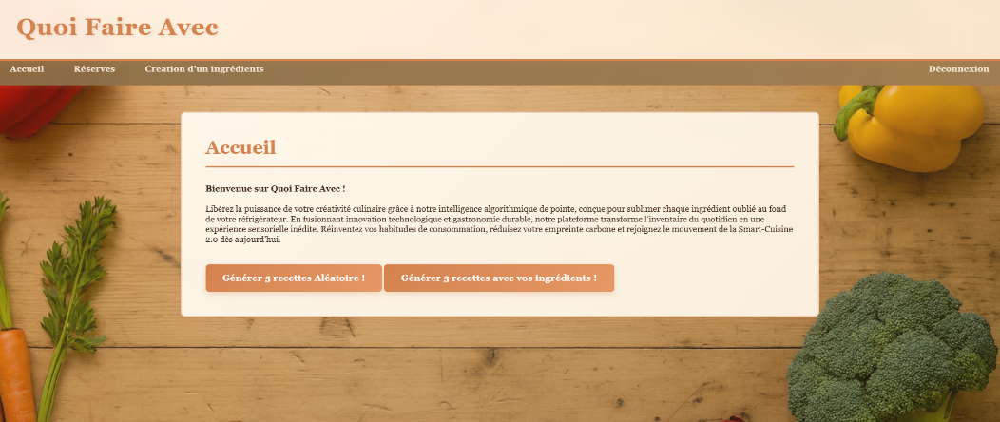
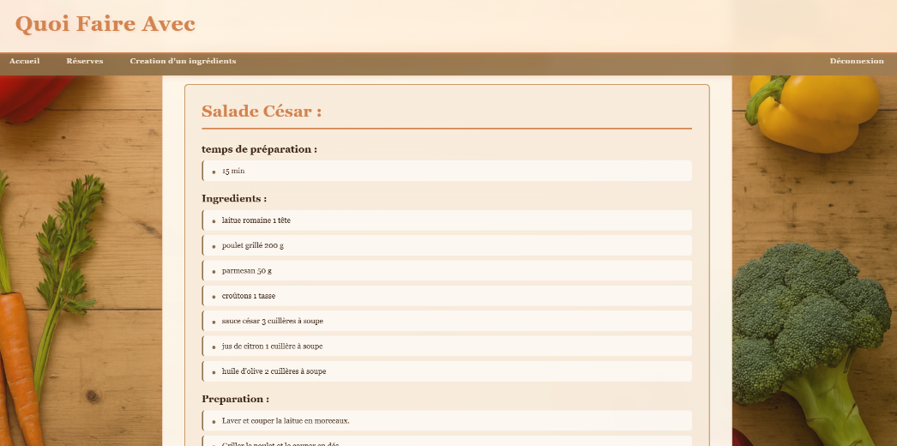
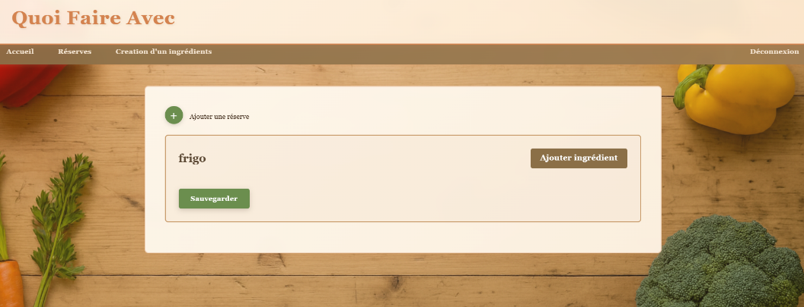

QuoiFaireAvec (Generateur de recettes de cuisine) 🧑🍳
Principaux Enjeux
- Bien enregistrer les ingrédients et les triers par réserves
- Prompter l'IA proprement pour obtenir une recette uniforme a chaque fois



bilan
Ma difficulté majeure a été de parvenir à extraire de la part de l'IA, la recette sans éléments superflus ni erreurs de formatage qui auraient pu nuire pour son affichage.